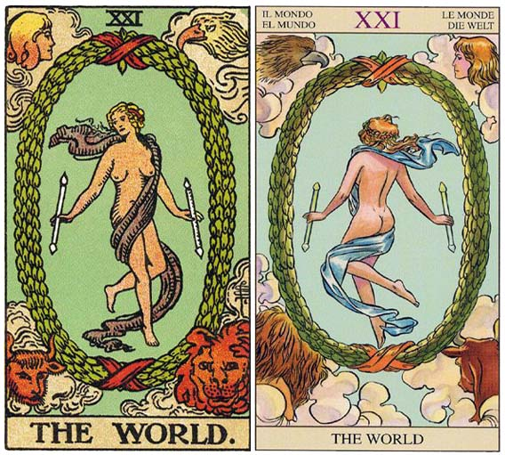

塔罗牌世界的牌面故事
相关词：完成、成功、成就、旅行
对应占星：金牛座
对应人物：Hermaphroditus
对应星象：金牛座
四元素：土元素
相关语：达成
含义：成功、胜利、充满。
加强牌：倒吊人、星星、审判、权杖三
相关传说：Hermes和Aphrodite的孩子。原本是男孩，仙女Salmacis爱上了他，把他抱住。并说：“神啊！我不想再离开他了！”于是成了合体。周围的四神为Aphrodie,Zeus,Athene,Poseidon。
优点：完成、成功、完美无缺、连续不断、精神亢奋、拥有毕生奋斗的目标、完成使命、幸运降临、快乐的结束、模范情侣。
缺点：未完成、失败、准备不足、盲目接受、一时不顺利、半途而废、精神颓废、饱和状态、合谋、态度不够融洽、感情受挫。
塔罗牌世界牌面故事
一个女性在跳舞，身上披着一条围巾，双手有魔杖（生命树）。这张牌代表宇宙的终点。月桂的花环中，裸体女性表情泰然，让人感觉有高贵的气质。画在四个角落的四元素：火——狮子，水——鹫，风——天使，地——母牛。代表星座的水瓶、金牛、狮子、蝎子。四元素的结合才能形成世界。
塔罗牌世界牌面解释
解读一
头上是无限的符号，妇女代表意识，狮子代表本能的兽性。
有些版本的塔罗牌，力是第十一张牌， 但是Waite 这套国际标准的牌，根据古希伯来文，认为第八张比较合理。 大部份外国的书，以及老一点版本的牌都是第十一张。 这里采用Rider-Waide 的顺序。
解读二
一个年轻貌美的女性，很轻松地驯服了狮子。 她的神力来自于她的意志力。 是不畏恐惧和战斗力的象征。
这张牌中胜利女神弯着腰正在抚摸一头凶猛的狮子，并用她的温柔与爱来安抚着怀中代表恐惧的狮子，它是爱与坚强意志的象征。正是因为有了爱与意志，人类才能克服困难，在历史的长河 中不断前进。狮子代表人类的本能，而美女则象征爱情和服从，二者必须保持和谐，互相支持才能成为征服世界的力量。此外它还意味着你有能力解决现在所面临的困难局面，并对自己内在的力量充满信心。
解牌时要注意“刚柔并济”，人类本能是恐惧的，需要有理智来控制和安慰；而又不能失去本能的动力，理智还要给予鼓励。由此可以看出“平衡”在塔罗牌的解释中是最重要的。
生日塔罗牌阵中若出现此牌，则能对主牌产生加倍的效果。若力量自己是主牌，那么，就要看搭配的牌面而找出自己把力道用在何处，来决定正反作用力，而采取适度的调整。通常，握有这张牌面的人，健康情形都不错，即使是偶有微恙，也比一般人容易复元。
这张牌面展现的力道，可以用两个一的十一，以及一加一等于二的数字来思考，也就是两个魔术师或者一位女祭司可能形成的力量。隐形的力量，永远大于肉眼可见之力，这也是以柔克刚，所产生出来的绝妙悖论，如同真空中的量子态动能。
精力旺盛的狮子座Leo是力量的主宰星座，生命元素属火。美女与野兽的标准结构，让这张牌预示着无条件的爱情，使激情融化在温暖的怀抱里，彻底降伏于柔软的和平境界。这一则寓言故事的内容，是绝佳参照标的，过程中许多戏剧张力，都包罗了无穷尽的两性课题；刚柔双方都是敢爱敢恨勇气十足的恋人，而在强弱来往互动中，尝尽了各种自我挖掘的残酷考验，进而提炼出意想不到的精神力量。
这张牌面象征着持久的人际关系，觉知与直觉并存，不断地交织出丰富的情绪能量；可爱的少女充满柔情，对勇猛的狮子毫无畏惧，一种怪异启示。事实上，少女象征意识的觉知力，而狮子则意味着我们内在的自然野性，而少女头顶的无限符号则代表永恒的能量。
随时注意自己的健康与能量，才能客观忠诚地善待自己与周遭所爱，否则很容易虚脱而造成自我崩盘，走向灵魂孤独的黑暗角落；这很可能是两性关系的长期拉扯，逐渐衍生出互相损耗的对峙状态，这场战争的结果，是两败俱伤的弃械投降。
在两性相处的关系中，爱恋双方欲望的彼此满足，是平衡健康与愉悦的关键之路，否则一但孳生恐惧，便只有互相折磨的浩劫，而没有滋养的可能。先征服自我的内在恐惧，才有激发并满足灵魂伴侣，而产生彼此激励的机会。
塔罗牌世界牌义解释
这张牌代表的是世界的灵魂与终极的存在，它是每个真实的灵魂所追寻的目标。不同年龄的人通过各种变形形式来展示他们精神的发展、成熟。唯一的束缚是我们对自己的限制。那些努力超越自我并为他人着想使世界变得更美好的人，会获得永恒的宇宙精神。
一个循环终结，你很快就会取得成功，获得回报。你在精神的成长中将达到一个新的层次。这张牌指示着，只要你拥有一颗感激的心，就必定能在自己创造的美丽世界中，寻求幸福与快乐。所以的事情都能达到，梦想在不久的将来都会实现。
世界如果在正位置，守在最后一道成功之门的成功女神正在那等待着你。手中轻握着两支胜利之钥，当你在她的面前时 ，你要把你的过去，现在与未来对她交待得清清楚楚，让她来审核，看是早点，让你进入那成功的殿堂还是晚一点。也许是严厉的，也许是温和的，这都看你的表现而定。她会让你通过的，只是时间早晚的问题。她也尝试告诉你，你已经成功了。你已经将步入成功之门了，要你不用担心，放松心情地留在花园内等待着音讯。东方经文证明了智者对她的遵崇，她就是力量，以时间空间及其内涵的形成存在。她是万物的光明。你们进入了对彼此互相承若之路，持续地彼此成长、学习与生活，这是一段象征着一份有力的承若与形成的生活路程开始，将是一段充满创意的开始。之前的努力造就现在的成功，虽然如此，你并不感到满足，你要努力地再次突破，努力地在成功的殿堂留下的你的足迹。
塔罗牌世界解牌参考
正位
1）美好的结局。
2）终极的改变。
3）事情的成功。
4）达成目标。
5）毕生追求的梦想得以实现。
6）辛勤付出之后得到了报酬。
7）完美的恋情。
逆位
1）功亏ー篑。
2）精神状态不好。
3）感情受挫。
4）无法完成想完成的事情。
5）极度失望。
6）丧失成功。
7）不完美。
塔罗牌世界正位释义
1）人际财富：收入有所增加、资金运作特别合理、喜相逢、从交友中获益、人际关系非常的稳定、备受他人信赖。
2）健康生活：身体健康、体力充沛、精神烁烁。
3）工作学业：事业鼎盛时期、所定的目标已经完成、非常适合从事航空航天相关的工作、学业有成、成绩特别的优异、目标达成、考试顺利。
4）其他：梦想成真、非常适合前往海洋或者草原等开阔的地方旅游、幸福伴随左右。
5）基本含义：愿望已经达成、精神十分高昂、幸福时光、达到巅峰、到达目的地、获得成功。
6）恋爱婚姻：得到祝福的幸福婚姻、最佳伴侣、美满婚姻、会有永恒的爱恋。
7）完成、成功、完美无缺、连续不断、精神亢奋、拥有毕生奋斗的目标、完成使命、幸运降临、快乐的结束、模范情侣
8）这张牌正立时，在事业上因为努力工作，所以回报丰厚。感情上，你们在彼此的承诺中持续着美好的关系。
塔罗牌世界逆位释义
1）人际财富：破产、现金流通比较短缺、交友遇挫、朋友关系冷淡、处世过于幼稚以致凡事不顺。
2）恋爱婚姻：恋情前景不明朗、彼此难以结合、感情特别容易出现破裂、彼此关系暧昧不清、以往的热情逐渐冷却、对伴侣已失去新鲜感。
3）基本含义：无法全身心地投人、杞人忧天、凡事不太顺利、不安于现状、情绪特别低迷、思维颇显幼稚。
4）健康生活：因肝火旺盛而气大伤身、心理压力过重无处宣泄。
5）其他：计划不周、不适宜乔迁动土、缺乏鲜见之名、不得要领。
6）工作学业：面对工作感到力不从心或是精神懈怠、事业前景不被看好、处于事业和学业的低潮期、项目或课业半途而废、工作备受他人欺压、潜能受到外界束缚无法发挥、对当前薪金待遇感到强烈的不满、成绩下降、面对学业精神懈怠、因备考不足致使考试失利。
7）未完成、失败、准备不足、盲目接受、一时不顺利、半途而废、精神颓废、饱和状态、合谋、态度不够融洽、感情受挫。
8）这张牌倒立时，在事业的路上有巨大的障碍，你精神不振，丧失了挑战的动力。感情上，你们不再重视承诺，只是盲目接受对方。彼此最好能沟通一下，不要让痛苦继续纠缠着你们。
倒立的世界
当世界倒立时，她就握不住这些权杖了，因为她的判断变得模糊不清，而且她相信哪些在审判牌中还没有放掉的事情。她必须再度回到审判牌，以净化她对宇宙的理解。
当这张牌倒立时，它依然暗示着到处旅行。它也可以暗示事业或两性关系上的成功，但这种成功无法被保存，所以只好被放掉。例如一位得到全世界认同的演员，却再度沉寂下来。正如一句谚语所说：“曾经爱过又失去它，总比从来不曾爱过好。”
在这项成功之外，还会有更伟大的成功，因为虽然现在你不能把全世界都掌握在手中，然而这只是时间早晚的问题而已。这也不是你最后一个挑战，因为还有其他更重要的挑战会紧跟而来。
我将这张牌比喻为正在攀爬一座很高的山岳，结果却发现它的陡坡遮住另一座更高、更需要去爬的山。有人认为是这项成功带来了快乐，却不知道其实是快乐带了成功。
塔罗牌世界大体上的意义
世界牌可能意指环游世界，或重大的成功及快乐。就变通的角度而言，它暗示你就站在生命希望你站的地方，而你也能感受到生命及你周遭的人的支持。它描述着一种快乐，它不是来自拥有或耕耘，而是来自存在。
在事业上，世界牌形容一种极大的成功满足。在最近一次有关事业的分析中，出现了这张牌和太阳。两张都是正立的。我形容这是项与创意有关的事业，有着极大成功的可能性，或许可至海外发展，或至少可得到海外的认同。此人是一名漫画家，将要和美国一家数一数二的动画制作公司签约。太阳显示出此工作的创意性，而世界形容着成功。
如果有人问：实行一个方案、追寻一种两性关系，或展开一项行动等是否明智，而世界牌出现作为答案时，它代表的是一个明确的“是”。如果要更正确的预测，就得把其它的牌也列入考虑。
塔罗牌世界两性关系上的意义
世界象征两性关系当中美好而持续的事物。它显示你正处于一种共荣的两性关系中。你和伴侣能够在你们所同意的范围内完全的成长、发展和生活。
这份关系中存在相当强大的驱动力，这可不是一段可以等闲视之或轻忽的关系。如果它是在过去的位置，可能意味着一个住在另一个地方的伴侣，或你到另一个地方旅行时，可能会遇到某个人。
塔罗牌世界爱情
爱情正位
你们相处到现在已经是非常圆满完美了，你和他算是已经磨合的差不多了，你们之间要在一起也不会有任何现实方面的阻碍，一切都那么稳定圆满，可以说对于你们来讲要结婚也只是一句话一张纸的事。而未来里你们也只要保持现在的模式继续下去就可以了，没有其他任何需要担心的，你们的感情会受到一切的祝福圆满的走下去的。
爱情逆位
虽然在你看来你们之间一切都很好，相处愉快，前景坦荡。但实际上你们的感情中还是有一些不足的地方，或许是双方性格上的一些小矛盾，也有可能是未来里的某点小不足。虽然这些你们都不是很介意，虽然这些都是小问题。但不可否认你们的感情距离完美还是有一定差距的。其实不够完美的爱情，才算是真正生存于这个世间的爱情吧，而你们之间也不需要担心没未来，所以一切还算是比较美好的。
塔罗牌世界事业
事业正位
这是一份非常棒的工作哦，可以说这份工作非常适合和值得你选择，也是适合你一直长久做下去的事业！在这份工作里你的价值能够得到最大的发挥，并且能让你获得很高的成就。甚至继续做下去你都不用考虑跳槽换更好的等等的事，它能够满足你的一切要求并且实现你的自我价值！
事业逆位
虽然这份工作中有一些不足不太好的地方，要么工资不是很满意，要么是工作内容让你觉得无聊，但是不可否认它是一个值得你继续选择的工作。虽然里面的一些问题并不是说解决就能解决的，但这份工作的前景还是蛮不错的，只要你坚持做，不能完全达到你心目中的要求至少也算是能让你满意了。
塔罗牌世界学习
学习正位
你未来里的学习状况非常不错哦，因为不断的累积在学习方面你会获得很高的成就。并且你本身对这块的学习运就不错，要达到较高的成绩还是不难的。对你来讲未来里只要你能坚持，并且保持原来的学习模式就可以了。在学习中你不能太偷懒，最好要做到什么都去接触和做好，要知道可能如果你仅搞定了一个是无法处理好全部的。
学习逆位
虽然你在面对学习方面并不是非常积极非常的上进，但其实你的成绩还算是挺不错的。虽然你并不会吧全部都做的很好，但懂得劳逸结合并且肯努力的你最终成绩还算是能够让你满意的。未来里在学习中可以稍微的再细心一点专心一点，不需要过，稍微的认真一些就能让你的情况更上一层楼。
塔罗牌世界在工作方面的启示
世界牌象征功德圆满。
我们从学校出来，求职、工作、兼职、加班、再进修、在职进修、失业、跳槽、转业、升官。培养第二专长、走出第二曲线、创业、集资、合伙、退股、转投资、退休、第二春、退而不休。
为的什么？真的得到什么？在人生的档案夹中，我真的明了自己的“投资组合”吗？
如果我们是自己生命那个唯一的基金经理人，我们真知道我们自己把资源放到哪些地方、哪些产业、哪种币值的市场里？
我们是不是浑浑噩噩或气急败坏地，跟着整个社会或少数关键人（如我们的父母、老板、配偶或企业偶像），起乩起舞？
如果我们必须面对最后的收成，那全方位不只有职场成绩的收成，还包括家庭、健康、感情、兴趣、社会、人际关系的成功，上焉者“立德、立言、立功”的成功。
不谈吓死人的伟大目标，平凡勤恳的上班族能够赚到足够保障晚年生活品质的收人，能有老伴或老友，有豁达的识见和胸襟，也许还有健康自信善良的后代——这朵盛开过的花，也可以欣然的了。
世界牌是一切的终点，美满、成功、幸福、康健，一生至此夫复何求。可是如果没有自己内心的自证，没人能证明你达到这个境地。
外在的条件看来再好，当你心里苦，那就是真的苦。别人再怎么称赞嫉妒你，只有你哑巴吃黄连。
然而，这世上绝大多数的人，注定无法达成这种全面品质的成功。
还没成熟，已经苍老；还没提升，已经坠落；还没蜕变，已经僵固。蝴蝶死在蛹里，庄严的生命只谱出浅薄的序曲。
那时候就是世界牌的反面，一切有待愚者牌的从头再来了。
塔罗牌世界解释网友问答
塔罗牌世界解释问题一：塔罗牌“世界”逆位，在爱情，两个人未来关系中 是表达什么意思
在玩日本爱情塔罗占卜的时候，分别占卜了现在自己的想法，BF对方的想法，以及未来我们2人的关系。但是看不懂，未来关系中“世界”这张牌逆位的意思。特此求教，谢谢~
日文如下：
あなたの选んだタロットカード
21 world 世界 （逆位置）
カードの表す意味
二人の関系は意図していた结果に至らないまま、次の段阶に进むときです。一つの失败を手放すことで一からはじめなおすことが出来るのです。たとえ思い通りではないことが起きても、新规莳き直しのつもりでがんばりましょう。
网友解答：虽然你登上了顶峰，但你的登顶也让你看见了另一座更高的山。一山还有一山高，这意味着虽然你已经完成阶段性的目标，但还是会再设一个更高的目标去达成。目前这个成功既非你最后一个，也不会是最伟大的一个。
倒立的世界牌也代表，这是重新返回正立的审判牌的时候，好去理清你的判断。www.yw11.com或许你在追寻比较小的目标，而没有考虑到比较长远的、精神层次的目标。只是寻求短暂回报，而忽略了最终的精神目标，会让人长期的处于不满足的状态中。
塔罗牌世界解释问题二：塔罗牌，世界(正位) ，两人的关系将迎来一个完结的节点。求解
未来：
世界(正位)—— 两人的关系将迎来一个完结的节点。也许你已经意识到：迄今为止建立起来的关系，已经让两人彼此都充分的成长了。此后，将迎来新的开始。
其他牌位忘记了。占的内容是2人的爱情。代表未来的牌是 世界（正位）
网友解答：与其说世界代表结束，倒不如说世界是最后的胜利和美好结局。爱情可能达到一个完成阶段，如果你们的现状不好，那么久表示好聚好散的时候到了，如果你们幸福美满，就可能会进入一个新的阶段，比如结婚或生子。前边的情感会告一段落，即将开始一段新的体验。不知道你用的是什么牌阵，也不知道你的具体情况，太笼统，这样解出来的牌不能太准，如果你想知道具体的情况，建议你把牌阵和你的背景交代清楚……总之，这张牌的意思还是挺明朗的。
塔罗牌世界解释问题三：我的塔罗牌开牌后，选出的牌灵是世界，这对于塔罗牌和使用者意味着什么，代表了什么含义呢？？
网友解答：塔罗牌大阿卡那的第21张是“世界”，牌面上有一位女神手持权杖在奔跑，她拥有无尽的力量，穿越全世界以展示真理。这张牌表示，在这个星球上没有什么是得不到的。这张牌正立时的解释是报酬优厚、人格正直。牌面倒立时则指出巨大的障碍、精神涣散以及自怜的性格。
当然，塔罗的具体牌义还是要依据具体情况来判断的，这只是一个引子，起的是引导的作用。
塔罗牌世界解释问题四：塔罗牌给我的建议是世界逆位,
在玩爱情塔罗牌的测“缘分”的时候,塔罗牌给我未来的建议是：世界-逆位.
= 这不是不好的位置嘛.给我这种建议干嘛.
给我未来的建议是世界-逆位,
补充：是对询问者采取行动的建议.
真搞不懂.世界逆位在这里做什么- - 难道要我把事情搞砸嘛.
网友解答：个人意见,世界代表我们要积极投身于其中,才能把握世界,逆位表示你态度不够圆滑,因不够成熟而感情受挫,看来塔罗建议你,若你想把握好这段姻缘,应该投放更多的精力于其中,不要抱着玩玩的心态,而且你本人可能在感情处理方面比较生涩,要谨慎注意好对对方的态度,凡事要成熟一点,不要老是为一丁点事就咄咄逼人~以上仅为本人谬解,不代表本人立场~慎用
塔罗牌世界解释问题五： 塔罗牌占卜近期会不会怀孕三个牌都是正位 第一是宝剑6 第二是倒吊人 第三是世界 这个牌意是什么意思
塔罗牌占卜近期会不会怀孕三个牌都是正位 第一是宝剑6 第二是倒吊人 第三是世界 这个牌意是什么意思？
网友解答：这张牌显示的是,就是遇到再糟的状况,只要我们耐心等待,厄运终究会过去的好好利用这段时光去反思,放弃不必要的东西,才能去做该做的事.让生命中的事物自然而然地发生,或许将为你带来惊奇。 牌面正立是有偿的牺牲，代表认清极限、解决问题和拥有人文特质。 在爱情上，吊人代表着一段反省的时光，内在的和平及宁静伴着此牌而来。 接受考验 有失必有得 从痛苦的体验中获得教训 过度期 欲火重生 奉献的爱 明知辛劳但全力以赴 牌面倒立表示在精神上有所局限,并且缺乏远见你会听从别人对你的期望，而不是顺从你真正的想法。它也可能代表你正在抗拒着自己的某部分，不肯顺从自己的精神目的。也许你并不了解现在到底是什么东西束缚了你，现在并不适合挣扎，因为时机未到。好好利用时间反省，顺从自有好处。 无谓的牺牲 任性妄为 变得没有耐性 受到惩罚 无偿的爱 最后祝您生活愉快身体健康。如有疑问请您继续追问，望采纳谢谢
塔罗牌世界解释问题六：前世今生占卜：
死神（逆位）牌义： 前世是谁，包括个性、感情倾向
审判（正位） 恶魔（逆位）牌义： 在前世所学
牌义：在前世所学习到的事， 当中曾经失败的事
特别是情感上的事
战车（正位）牌义： 今生的自已是谁，包括个性、感情倾向
魔术师（正位）牌义： 什么事对自已而言是简单的
月亮（正位）牌义： 什么事对自已而言是困难的
愚者（逆位）牌义： 经常出现的问题
世界（正位）牌义： 解决问题的最佳方法
塔（正位）今生要学习的目标、特别是情感方面，记起前世的经验，今生的考验、好好去爱别人与爱自已
网友解答：你前世是一个经常迷惑的人 你过去很有创造力很有想象力 是个很有天赋的人 但你遇见问题经常不知道该如何选择 经常疑惑
今生你是个有目标就一定要实现的勇往直前的人 骨子里很强硬 感情上渴望从一而终风风火火的恋情 你的问题在于过于大胆不愿受拘束 有时太过无知莽撞 解决问题的最佳方法是在不断的学习中吸取经验 去异国留学或旅游会为你增长不少见识
今生你要学会忍让学会谦卑 学会悬崖勒马 一味的横冲直撞会将你引领至【16.塔】毁灭
塔罗牌世界解释问题七：你们相信塔罗牌吗？
其实，我对于这些都是似信非信。 但在这学期开学的时候，我同学帮我算塔罗牌，说我会恋爱，而造成财政赤字，学业直线下降什么的，其实这些平时也有啦，但是最后一点！说我会不顾父母和周边朋友反对而同居，其实我是个大大咧咧的女孩，对于恋爱都是可有可无，但我真的就稀里糊涂恋爱了，而且我心里强烈不支持的婚前性行为，好多年了，但是塔罗牌算我会同居，现在学期末了，如果我没有同居就说明我赢了，如果同居了，结局会很不好，而且也说明塔罗牌真的很准。 (我打心里接受不了同居！！！！！！！)
网友解答：世界上最厉害的塔罗大师，简.肯尼亚。默默无闻的死在了苦修的山洞里，从此我便为塔罗的魅力所深深折服，这不叫职业，它已经成为一种信仰，传说，塔罗运算到顶级可以测算轮回，事实上，没有人玩到顶级，在中国，更没有多少人愿意学这个鸡肋的东西。
塔罗牌世界解释问题八：塔罗牌解密，世界是什么意思？
前几天测塔罗牌，前４张非常糟糕，最后一张是世界是什么意思
网友解答：首先你没说世界是正位还是逆位，其次解塔罗牌是根据整个牌阵还有每张牌的含义进行占卜，你现在只说有世界这张牌很难对你的问题进行解释。
塔罗牌世界解释问题九：塔罗牌测试结果,不懂看..
根据《 爱情圣杯五角占 》，你抽到五张牌中的
第1张塔罗牌是 《战车》，代表本人的爱情态度，
第 2张塔罗牌是《世界》，代表未来12个月的爱情运如何，
第3张塔罗牌是《高塔》，代表恋爱贵人，
第4张塔罗牌是《审判》，代表爱情开运小秘方，
第5张塔罗牌是《女教宗》，代表爱情个性调整处方。
上面的牌都是正位的...
哪位大师帮偶看看..要怎么理解啊??
网友解答：根据自己的实际情况，对照书上的解释，一般都可以做出适当的释义的。
塔罗牌世界解释问题十：塔罗牌详解
为什么他的笑会有熟悉的感觉，他
是我以前见过的人吗?
1前因 愚者 恋人逆
后果 世界
我会找到相爱一生的人吗？他（另一个）是？
2过去 星逆
现在 恋人 力量逆
将来 月逆
我要详细的解吖
第二个问题应是
我会找到一直都爱的人吗
他喜欢我吗
网友解答：前因中，愚者＆恋人r是说，你也许作出了错误的选择，现在的你们感情面临危机，厌倦、争吵，反复无常……不过，不用担心
后果的“世界”代表事情会有圆满的结局，愿望达成，未来一片光明
过去的你迷茫不知所措，对现实感到失望，思想有点脱离实际，
现在你遇到了他，“恋爱”表明你们拥有一段真挚的感情，未来充满希望，
不过你的胆小，或者说害怕因告白而失去他，会有轻易放弃的可能
将来的“月r”，暗示了你们之间的关系在日后会发生意外，可能是好的意外，误会冰释，反复，不过你也许会继续静静地等待。
塔罗牌世界解释问题十一：塔罗牌结局是世界正位
占卜的是分手后会遇到新男友吗，第一张是过去，月亮逆位，第二张现在命运之轮正位，吊人正位，审判正位，愚人正位，星星逆位，结局是世界正位，帮我看下谢谢大家
网友解答：月亮逆位 认清对方真面目从虚假恋情中沉醒
命运之轮正位 一见钟情命运性的邂逅新恋情分离恋人合好如初
吊人正位 宠爱恋人无结果的爱情遭遇困阻伤心过后有一丝龧光
审叛正位 言归于好恋情复燃结婚可能
愚人正位 一厢情愿的单恋
星星逆位 单相思自作多情嫉妒没有希望的爱情
世界正位 单恋将有结果人人称羡的爱情热恋幸福婚姻
综上 遇见新男友经历阻碍单恋有结果
塔罗牌世界解释问题十二：我抽到塔罗牌，世界（逆位），代表什么？
我刚刚抽塔罗，想要问暗恋，抽到的是“世界”逆位，这代表着什么呢？我和我暗恋的人会怎样呢？
“世界”代表的是宏观。而塔罗中的“世界”自然也代表了包罗万象。总的来说，因为包涵万物，所以表示事情的圆满。
网友解答：但是，逆位一切将倒转。你的暗恋终将无疾而终。即使你们有交集，也会因为方方面面的原因终止。他不是你命中良人，有缘无分。
塔罗牌世界解释问题十三：关于塔罗牌的爱情，世界正位。。。
小弟经常用一张牌来测心里想的事情。。。
但是这次很不解，求高手解答。。。
自己特别喜欢而且跟自己很暧昧的女孩子和男朋友出现感情问题，她找我来倾诉。。。
我自己抽了一张牌，想知道这件事对小弟有什么影响，抽到世界正位，想求高手解释下。。。
我觉得你这一卜太笼统了 应该具体自己的问题
网友解答：世界 正位 表示恋人终成眷属，完成事情，非常幸运，光明的未来，希望与美好，名誉，胜利，国外旅游，成功，人格高尚。
这里对于你的影响可能性太多了，可能是只你的运气来了，可以有机会追求你喜欢的女孩子。
可能是因为你的劝说使其和男友重归于好。
希望你可以进行一些具体的占卜。
比如那个女孩子是否会分手
是否喜欢你等等。
塔罗牌世界解释问题十四：塔罗牌里的世界逆位是不是代表错过？拜托各位了 3Q
我占过一副牌，问题关于我和另一个人的将来，可将来位置的那张就是世界的逆位，有点接受不了现实，不过我还是想知道有没有别的解？
网友解答：代表你们已经离成功不远了 但是还没有找到进入成功的钥匙 你们之间还缺了一些东西